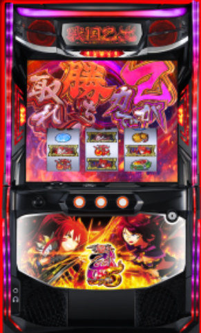

目次

L戦国乙女5 業火を穿つ宿焔の双刃 戦国乙女5 ｜ オリンピア（OLYMPIA / 平和）
L戦国乙女5 スペック・機械割
| 設定 | AT初当たり確率 | 機械割 |
|---|---|---|
| 1 | 1/359.5 | 97.9% |
| 2 | 1/350.8 | 98.9% |
| 3 | 1/332.5 | 101.0% |
| 4 | 1/302.8 | 106.2% |
| 5 | 1/281.0 | 111.1% |
| 6 | 1/262.9 | 114.9% |
※ 掲載数値は公開解析情報に基づきます。実際の数値と異なる場合があります。
遊技時間別・理論差枚数の目安
| 設定 | 差枚数 1時間 |
差枚数 3時間 |
差枚数 5時間 |
差枚数 8時間 |
|---|---|---|---|---|
| 1 | ||||
| 2 | ||||
| 3 | ||||
| 4 | ||||
| 5 | ||||
| 6 |
※ 差枚数は理論値（機械割 × 投入枚数 − 投入枚数）。実際の結果とは異なります。
L戦国乙女5 小役確率
以下は全設定共通の小役確率です。
| 小役 | 確率 | 備考 |
|---|---|---|
| リプレイ | 1/9.4 | 全設定共通 |
| 共通ベル | 1/17.5 | 全設定共通 |
| スイカ | 1/69.4 | 全設定共通 |
| 弱チェリー | 1/88.2 | 全設定共通 |
| 強チェリー | 1/397.2 | 全設定共通 |
| チャンス目A | 1/392.4 | 全設定共通 |
| チャンス目B | 1/392.4 | 全設定共通 |
🔔 小役は全設定共通のため、設定判別には使用できません。AT初当たり確率や乙女アタック当選率を優先して確認しましょう。
L戦国乙女5 設定判別ポイント
① AT初当たり確率（最重要）
| 設定 | AT初当たり確率 | 目安 |
|---|---|---|
| 1 | 1/359.5 | 低設定 |
| 2 | 1/350.8 | 低設定 |
| 3 | 1/332.5 | 中間 |
| 4 | 1/302.8 | 中間以上 |
| 5 | 1/281.0 | 高設定 |
| 6 | 1/262.9 | 高設定 |
② 乙女アタック当選率（巫女ポイント経由）
| 設定 | 乙女アタック当選率 | 目安 |
|---|---|---|
| 1 | 20.3% | 低設定 |
| 2 | 21.4% | 低設定 |
| 3 | 23.2% | 中間 |
| 4 | 24.7% | 中間以上 |
| 5 | 25.2% | 高設定 |
| 6 | 25.7% | 高設定 |
※ カンスケモード非滞在時の数値。乙女アタック自体のAT当選期待度（約52%）には設定差なし。
③ 演出による設定示唆
- ボーナス終了画面のスタンプ：出現種類により設定を示唆（5段階）
- 「ハルルナPUSH」出現：高設定示唆
- 「隠れ凪」のセリフ色：6パターンで設定示唆
- エンディング中キャラ紹介：高設定ほど豪華な示唆
L戦国乙女5 終了画面・設定示唆演出
AT終了画面の示唆
| 終了画面 | 示唆内容 |
|---|---|
| ノブナガ | デフォルト |
| マサムネ・ヒデヨシ | 周期テーブル通常B以上示唆 |
| モトナリ・ドウセツ・ソウリン | 通常B以上示唆 ＋ 1周期目100G以内示唆 |
| 敵キャラ集合 | 乙女ストラップモード「ヨシテル」濃厚 |
| イエヤス・シンゲン・カンスケ・ヨシモト | 通常B以上濃厚（通常Aなら設定4以上） |
| 乙女集合（赤背景） | 天国濃厚（天国否定で設定4以上） |
| 乙女集合（金背景） | 天国濃厚 ＋ 設定2以上確定 |
ボーナス終了画面スタンプ（設定示唆）
| スタンプ | 設定示唆 |
|---|---|
| 可 | 設定2以上 |
| 吉 | 設定3以上 |
| 良 | 設定4以上 |
| 優 | 設定5以上 |
| 極 | 設定6確定 |
🖼 スタンプ「極」が出現すれば設定6確定。「良」以上の出現で高設定に期待できます。終了画面は必ず確認しましょう。
L戦国乙女5 アイキャッチ
通常時のステージチェンジ時にアイキャッチが出現。種類によって周期到達の近さを示唆します。
| アイキャッチ | 示唆内容 |
|---|---|
| ヒデヨシ＆ノブナガ | デフォルト |
| シンゲン＆ケンシン | デフォルト |
| イエヤス＆ヨシモト | デフォルト |
| カンスケ | 周期到達が近い!? |
| ノブナガ | 周期到達が近い!? |
| 全員集合 | 周期到達が近い!?（最も期待度が高い） |
🎬 2人キャラ＋白背景はデフォルト。「全員集合」出現時は次の周期でのAT当選に期待大。すぐにやめず様子を見ましょう。
L戦国乙女5 天井・リセット
天井条件
| 条件 | 内容 |
|---|---|
| 天井G数（通常時） | 999G+α |
| 天井G数（設定変更時） | 650G+α |
| 周期天井 | 最大6周期消化（通常A） |
| 1周期の長さ | 最大500G（加算込み） |
| 天井恩恵 | AT（強カワRUSH）確定 |
モード別天井周期
| モード | 最大周期数 |
|---|---|
| 通常A | 最大6周期 |
| 通常B | 最大3周期 |
| 天国モード | 最大1周期 |
リセット・引き継ぎ
- 設定変更時：有利区間がリセットされ、天井周期が最大4周期に短縮
- 天井Gは引き継がれない（毎回0Gからスタート）
- 電源OFF/ONのみ（設定据え置き）：天井Gを引き継ぐ
⏱ 設定変更台は通常Aの最大周期が6→4に短縮されるため、朝一から1〜2周期で当選が期待できます。
L戦国乙女5 モード・ゾーン詳細
周期テーブル（3種類）
AT初当たりまでの最大周期数を管理するテーブル。AT後や設定変更時に再抽選されます。
| テーブル | 最大周期数 | 特徴 |
|---|---|---|
| 通常A | 最大6周期 | デフォルト |
| 通常B | 最大3周期 | 早い当選に期待 |
| 天国 | 最大1周期 | 即当選濃厚 |
周期モード（5種類）
各周期内で規定G数を決定するモード。モードによって最大G数が異なります。
| モード | 最大G数 | 特徴 |
|---|---|---|
| 引き戻し | 最大200G | AT後の引き戻しゾーン・期待度高 |
| モードA | 最大500G | デフォルト |
| モードB | 最大300G | やや優遇 |
| モードC | 最大200G | 優遇 |
| チャンス | 最大50G | 超早期当選に期待 |
ステージによる示唆
- 毛利邸（夜）：50G以内に周期到達濃厚
- 封印の塔：50G以内に周期到達濃厚
- 周期カウンタ光エフェクト（白）：最大5周期以内
- 周期カウンタ光エフェクト（青）：残3周期以内 ＋ 当該周期期待度50%以上
- 周期カウンタ光エフェクト（赤）：当該周期での規定周期到達濃厚
L戦国乙女5 天井期待値
設定1・通常時と設定変更時のゲーム数別期待収支です。
通常時（設定1）
| 打ち出しG数 | 等価 | 5.6枚交換 |
|---|---|---|
| 0G | -1,541pt | -2,619pt |
| 200G | -894pt | -1,972pt |
| 400G | +188pt | -890pt |
| 550G | +1,455pt | +377pt |
| 650G | +2,615pt | +1,538pt |
| 800G | +5,025pt | +3,947pt |
| 950G | +8,569pt | +7,491pt |
設定変更時（設定1）
| 打ち出しG数 | 等価 | 5.6枚交換 |
|---|---|---|
| 0G | -1,355pt | -2,303pt |
| 200G | +232pt | -715pt |
| 400G | +2,887pt | +1,940pt |
| 550G | +5,995pt | +5,048pt |
※「強カワチャンス」によるG数加算は天井カウント対象外です。
狙い目ライン
| 条件 | G数狙い目 | 周期狙い目 |
|---|---|---|
| 通常（等価） | 550G〜 | 5周期〜 |
| 通常（5.6枚交換） | 650G〜 | 5周期〜 |
| 設定変更（等価） | 300G〜 | 3周期〜 |
| 設定変更（5.6枚交換） | 350G〜 | 3周期〜 |
L戦国乙女5 やめ時・狙い目
基本のやめ時
- AT終了後、1周期目まではフォロー推奨（引き戻しモード滞在の可能性あり）
- 引き戻しモード中は最大200GでAT期待度約40%
- 1周期消化後、有利区間ランプ消灯を確認してやめ
- ランプ点灯中は次の周期が進んでいるため、消灯確認が必須
やめてはいけないタイミング
- アイキャッチ「全員集合」出現後：周期到達が近い可能性大
- ステージ「毛利邸（夜）」「封印の塔」：50G以内に周期到達濃厚
- 周期カウンタ光エフェクト（青・赤）：残り周期が少ない or 当該周期到達濃厚
- AT終了画面で「乙女集合（赤/金）」出現：天国テーブル濃厚のため1周期消化推奨
🚪 設定変更台は天井が650G+α（最大4周期）に短縮されるため、朝一から300G〜（等価）を目安に天井狙いが有効です。
L戦国乙女5 AT詳細（強カワRUSH）
AT段階構成
| 段階 | AT名 | 純増 | 初期G数 |
|---|---|---|---|
| メインAT | 強カワRUSH | 約2.7枚/G | 45G+α |
| 上位AT | 真強カワRUSH | 約4.8枚/G | 100G+α |
| エンディング | エンディングモード | 約6.9枚/G | エンディング到達後 |
主要CZ・ボーナス
- 乙女アタック（通常CZ）：20G継続、AT当選期待度約52%
- 剣聖チャンス（上位CZ）：10G+α継続、成功時は強カワRUSH確定
- 本能寺の変（AT中CZ）：4G+α、成功期待度50%（設定1）
- 出陣BONUS双：AT中ボーナス。二人の乙女が共闘しマルチプライヤー発動による大量獲得が期待できる
AT突入トリガー
- 周期抽選によるAT当選（通常時の主なルート）
- CZ（乙女アタック・剣聖チャンス）経由
- フリーズ発生時のAT直撃
- 天井到達（999G or 最大周期消化）
真強カワRUSH（上位AT）
| 項目 | 内容 |
|---|---|
| 初期G数 | 100G |
| 純増 | 約4.8枚/G |
| 期待枚数 | 約2,500枚over |
| 突入契機 | 剣聖チャンス成功 / 出陣チャンスで「ヨシテル」パネル獲得 |
| 終了後 | 剣聖チャンス非獲得時は引き戻しゾーン「百花繚乱チャンス」へ |
- AT中レア役成立時：G数直乗せ・ミツヒデ高確移行・CZ「カシンバトル」突入を抽選
- 規定G数到達時：20G周期でカシンバトル突入抽選（成功で出陣ボーナス獲得）
- 上位AT専用CZ：本能寺の変→カシンバトル、決戦ノ刻→オウガイバトルに変化
エンディング
- 有利区間の上限枚数に到達するとエンディング発動（純増約6.9枚/Gにアップ）
- エンディング終了後は上位CZ「剣聖チャンス」へ必ず突入
- 剣聖チャンス成功で上位AT突入、失敗でも通常ATへ突入
- 剣聖チャンス成功率：初当たり時 約51% → AT終了時 約70%
CZ・AT期待度（設定1）
| CZ / AT | 期待度 |
|---|---|
| 乙女アタック（トータルAT当選） | 約52% |
| 本能寺の変（勝利） | 約50% |
| 決戦ノ刻（勝利） | 約55% |
| 剣聖チャンス（初当たり時） | 約51% |
| 剣聖チャンス（AT終了時） | 約70% |
L戦国乙女5 乙女アタック
| 項目 | 内容 |
|---|---|
| 種類 | 通常CZ |
| 継続G数 | 20G |
| トータルAT当選期待度 | 約52%（全設定共通） |
| 突入契機 | 巫女ポイント0pt到達 / 周期抽選 |
- 巫女ポイント経由の当選率に設定差あり（設定1：20.3%〜設定6：25.7%）
- 乙女アタック自体のAT当選期待度（約52%）には設定差なし
- カンスケモード滞在時はCZ当選率が優遇される
プレミアム乙女アタック
- 乙女十傑「ソウリン」発動時に突入
- 通常の乙女アタックより大幅に期待度がアップ
上位CZ「剣聖チャンス」
- 継続G数：10G+α
- 成功時は強カワRUSH（AT）確定
- AT終了時の剣聖チャンスは成功率約70%と高め
L戦国乙女5 お風呂アタック
突入時点でAT＋出陣ボーナス獲得濃厚の報酬昇格CZ（STタイプ）。勝利回数によって出陣ボーナスの性能が変化します。
| 項目 | 内容 |
|---|---|
| 構成 | 1セット 8G+α（2Gの対戦が4回） |
| ST継続率 | 80% |
| 終了条件 | 3回勝利 or ST終了（最大4対戦） |
勝利回数別・報酬テーブル
| 勝利回数 | 出陣ボーナス色 | 上乗せ性能 |
|---|---|---|
| 0回 | 黒 | 最低 |
| 1回 | 緑 | 低 |
| 2回 | 赤 | 高 |
| 3回 | 紫 | 最高 |
- 各対戦の1G目にヨシテル参戦抽選 → 参戦時は勝利濃厚
- ヨシテル参戦時は2G目の成立役で出陣ボーナスストック抽選も実施
L戦国乙女5 乙女十傑
発生すれば強力な恩恵を獲得できる特殊トリガー。全10パターンが存在します。
| # | キャラ | 発生タイミング | 恩恵 |
|---|---|---|---|
| 1 | モトナリ | 初当たり当選時 | 戦国乙女ボーナス当選 |
| 2 | ノブナガ | 前兆中 | 本前兆濃厚化 |
| 3 | ソウリン | 乙女アタック中 | プレミアム乙女アタック突入 |
| 4 | ゴエモン | AT中 | 3桁上乗せ＋本能寺の変（勝利濃厚） |
| 5 | カンスケ | AT中/出陣ボーナス中 | 逆転または上乗せ昇格 |
| 6 | ヨシテル | AT中/出陣ボーナス中 | 3桁上乗せ |
| 7 | ヒデヨシ | 出陣チャンス中 | パネル破壊 |
| 8 | ドウセツ | 出陣ボーナス中 | ATストック |
| 9 | マサムネ | 出陣ボーナス中 | 上乗せ強化 |
| 10 | ノブナガ | 通常時/AT中 | 夢幻の如くフリーズ |
👑 乙女十傑はいずれも強力な恩恵。特に「ノブナガ（フリーズ）」は最上位トリガーで、夢幻の如くフリーズから大量獲得が期待できます。
L戦国乙女5 乙女ストラップモード
液晶左上に出現する「乙女ストラップ」のキャラによって、滞在中のモードと恩恵を示唆します。
| モード | 恩恵内容 |
|---|---|
| ゴエモン | 周期モード規定G数を最大200Gへ短縮 |
| ノブナガ | 強カワチャンス当選率アップ・ハイ状態選択率アップ |
| ヒデヨシ | 周期テーブル通常B以上に滞在 |
| カンスケ | 巫女ポイント経由の乙女アタック当選率アップ |
| ミツヒデ | 本能寺の変ストックありでAT開始 |
| ヨシテル | AT当選で剣聖チャンスまたは真強カワRUSH突入 |
ストラップ個数による期待度
| 同一キャラ個数 | 期待度 |
|---|---|
| 1個 | 低 |
| 2個 | 中 |
| 3個 | 該当モード濃厚 |
🎀 同じキャラのストラップが3個揃えばそのモード濃厚。ヨシテルモードなら上位AT直結の大チャンスです。
L戦国乙女5 穢れシステム（ゴエモン依頼ポイント）
前兆失敗時やCZ失敗時に内部的にポイントが蓄積。規定ポイント到達後にATに当選すると、勝利濃厚の本能寺の変をストックした状態でATが開始されます。
| 項目 | 内容 |
|---|---|
| 獲得契機 | 前兆失敗時・CZ失敗時 |
| 発動契機 | 規定ポイント到達後にAT当選 |
| 恩恵 | 勝利濃厚の本能寺の変をストック |
| 初期設定 | 有利区間移行時に決定 |
ポイント獲得演出
| エフェクト | 示唆 |
|---|---|
| 小 | ポイント獲得（小） |
| 中 | ポイント獲得（中） |
| 大 | 大量ポイント獲得に期待 |
💀 CZ失敗が続いても穢れが蓄積され、次のATで恩恵を受けられます。大エフェクト出現時は穢れMAXが近い可能性があるため、やめ時に注意しましょう。
L戦国乙女5 有利区間
- 有利区間ランプは筐体左下に搭載（点灯中が有利区間）
- AT終了後、有利区間ランプ消灯を確認してやめるのが基本
- 設定変更時に有利区間はリセットされる
- エンディング到達でその有利区間中の上限に達する可能性あり
🔋 有利区間ランプ消灯後は天井Gがリセットされているため、消灯確認後にやめましょう。ランプ点灯中は次のATに向けて周期が進んでいます。
L戦国乙女5 打ち方・技術介入
通常時の打ち方
- 基本：順押しBAR狙い（左リール上段付近にBARを目押し）
- チェリー・スイカはリプレイフラグ扱いのため、取りこぼしても差枚数への影響はなし
- レア役（強チェリー・チャンス目）は目押しせずとも察知可能
AT中の打ち方
- ナビに従って消化するだけでOK（技術介入なし）
- 純増はメインAT約2.7枚/G、上位AT約4.8枚/G
👆 技術介入要素がないため、ナビに従って打つだけで最大効率を発揮できます。
L戦国乙女5 設定変更・朝一恩恵
| 項目 | 設定変更 | 電源OFF/ON（据え置き） |
|---|---|---|
| 有利区間 | リセット | 引き継ぎ |
| 天井G数 | リセット（0Gから） | 引き継ぎ |
| 天井周期 | 最大4周期に短縮 | 引き継ぎ |
| モード | 再抽選 | 引き継ぎ |
🌅 設定変更台は天井が最大4周期に短縮されるため、朝一から狙う価値があります。据え置き台は前日の天井Gを引き継ぐため、ハマり台の引き継ぎも有効です。
L戦国乙女5 設定判別ツール
AT初当たり回数を入力すると、設定ごとの出現確率（尤度）を計算します。
L戦国乙女5 よくある質問
L戦国乙女5の設定6機械割は？
L戦国乙女5の天井は何ゲームですか？
強カワRUSHと真強カワRUSHの違いは？
L戦国乙女5の設定判別で重要な指標は？
L戦国乙女5のやめ時はいつですか？
設定変更後の天井は短縮される？
アイキャッチの種類と示唆内容は？
乙女ストラップ（キーホルダー）とは？
モードは何種類ある？
穢れ（ゴエモン依頼ポイント）とは？
AT終了画面の示唆内容は？
乙女アタックの期待度は？
お風呂アタックとは？
乙女十傑とは？
上位AT（真強カワRUSH）終了後はどうなる？
天井期待値の狙い目は？
L戦国乙女5 業火を穿つ宿焔の双刃 公式動画
▶ 製品PV
▶ 最速試打解説動画
※ キュインちゃんねる@HEIWA（ハルルナ）公式YouTubeチャンネルより